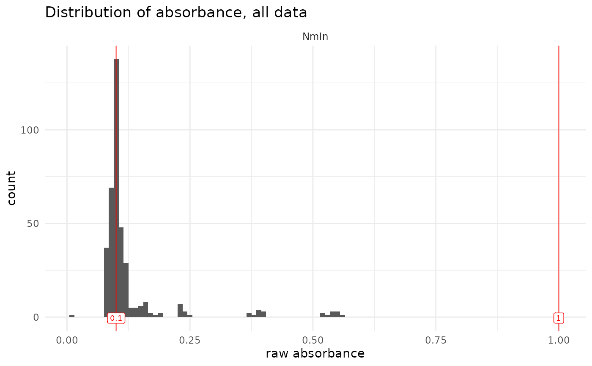

qc_raw_abs() extracts data relating to wells for which the absorbance is outside of a user-defined range.
Whereas there is a long-lasting tradition of setting "acceptable" absorbance values between 0.1 and 1 (default values for this function),
in reality, the acceptable range will depend on experiment, usage and quality of the spectrophotomer.
Note that values lower than 0.1 are not rare, especially for blank and lower values in the standard curve.
Usage
qc_raw_abs(
data,
min_abs = 0.1,
max_abs = 1,
empty_wells = "empty",
show_msg = TRUE,
show_warning = TRUE,
show_plot = TRUE,
plot_binwidth = 0.01,
plot_col_facet = "dataset",
export_plot = NULL
)Arguments
- data
Tibble, in a similar form to our
tidy_table. In particular, columnsmap,abs,dataset,plate_id,well_idmust be present and named so.- min_abs, max_abs
Lowest and highest accepted value for absorbance, default at 0.1 and 1, respectively.
- empty_wells
Character string corresponding to how empty wells are described in the plate mapping. Defaults to "empty", can also be a vector containing several values. Note that wells described as
NAin the map column will also be ignored.- show_msg, show_warning
Whether to keep (TRUE) or suppress (FALSE) the message or warning that are returned in the case of absence (message) or presence (warning) of suspicious, out-of-range, wells
- show_plot
Whether to display the associated plot (histogram of absorbance values). Default is
TRUE. Note that the next arguments are only relevant isshow_plot = TRUE.- plot_binwidth
To set the binwidth of the histogram. Default is 0.01
- plot_col_facet
Which column to use to facet the plots. For no facetting, choose
plot_col_facet = "none"(For now, only facet with 1 axis is possible)- export_plot
Defaults to null. Set it to a string to save the plot in the global environment, the string will name the object (e.g.,
export_plot = "abs_distrib"will save an object calledabs_distrib)
Value
A table with 5 columns.
The first 3 (dataset, plate_id, well_id) allow the unique identification of suspicious wells
and can be used to run remove_wells(). The next 2 columns (map, abs) allow further visualization of those suspicious wells
Examples
# bring some NA (abs) and empty wells in tidy_table to check that those wells are removed
data <- tidy_table
data$abs[1] <- NA
data$map[2] <- "empty"
qc_raw_abs(data)
#> Warning: 957 wells out of 958 are out of range for absorbance, i.e., not in the set boundaries of [0.1; 1].
#> See table to identify suspicious wells.

#> # A tibble: 957 × 5
#> dataset plate_id well_id map abs
#> <chr> <chr> <chr> <chr> <chr>
#> 1 expe1 M17 A1 Std0193 1.5611
#> 2 expe1 M18 A1 Std0289 1.7013
#> 3 expe1 M19 A1 Std0385 1.6865
#> 4 expe1 M20 A1 Std0481 1.7936
#> 5 expe1 M21 A1 Std0577 1.7925
#> 6 expe1 M22 A1 Std0673 1.8274
#> 7 expe1 M23 A1 Std0769 1.9330
#> 8 expe1 M12 A2 Std0002 1.4802
#> 9 expe1 M16 A2 Std0098 1.5590
#> 10 expe1 M17 A2 Std0194 1.5946
#> # ℹ 947 more rows